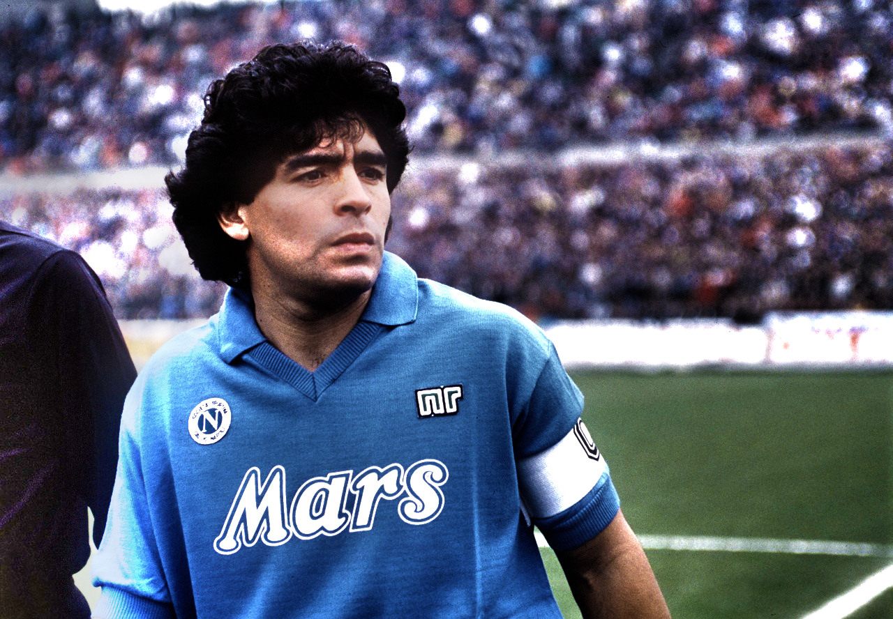
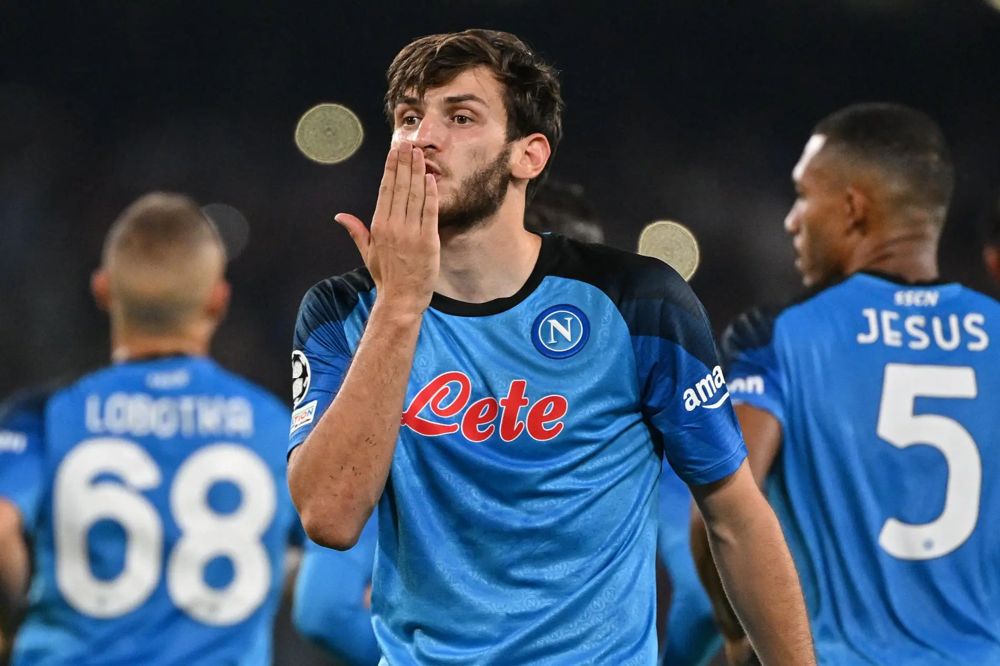
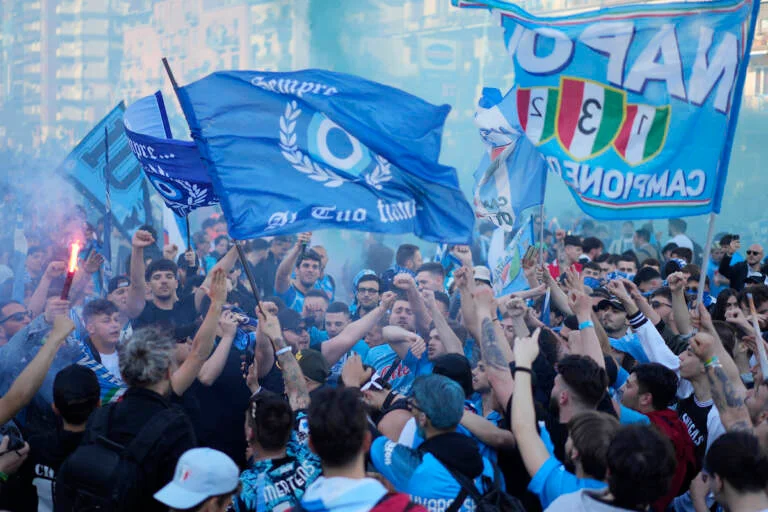

Diego Maradona's arrival at Napoli in 1984 transformed the club, leading them to their first-ever Serie A title in 1987 and securing a historic victory in the 1989 UEFA Cup. His skill, charisma, and leadership cemented his legacy as one of Napoli's greatest and most beloved figures, making him an icon in the city's football history.

Khvicha Kvaratskhelia, known as "Kvara," quickly became a fan favorite at Napoli after his arrival in 2022, helping the team secure the 2022-2023 Serie A title with his dazzling dribbling, vision, and goal-scoring ability. His impact on the field, combined with his exciting style of play, has made him one of the most exciting and influential players in Napoli's recent history.
